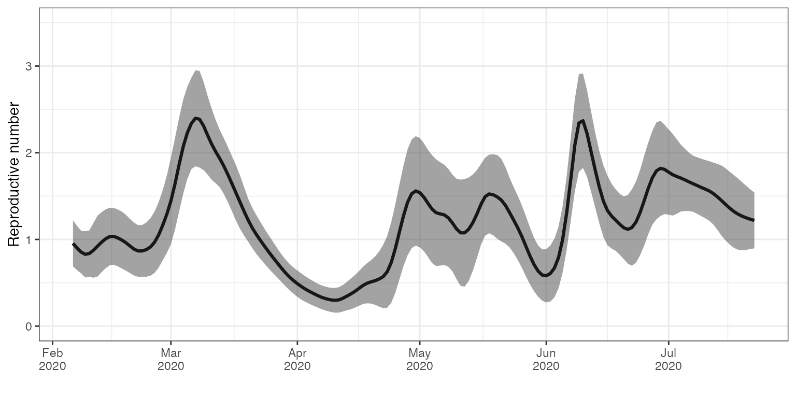
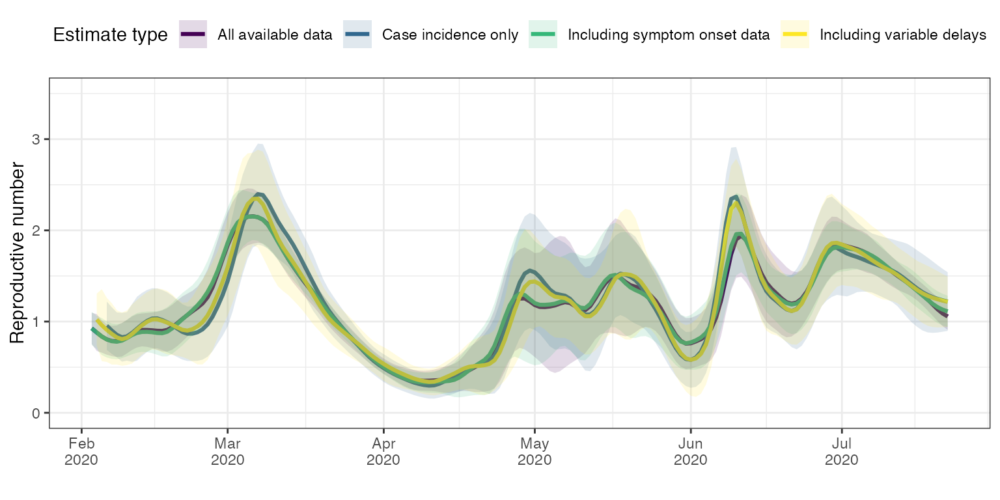

empirical-delay-data.RmdTODO rename vignette (both file name and vignette title) TODO there’s a lot of work to do on this vignette.
library(estimateR)
library(dplyr)
#>
#> Attaching package: 'dplyr'
#> The following objects are masked from 'package:stats':
#>
#> filter, lag
#> The following objects are masked from 'package:base':
#>
#> intersect, setdiff, setequal, union
library(tidyr)Aggregated case data for the Hong Kong COVID-19 epidemic. This data is derived from the linelist published by the Hong Kong Centre for Health Protection.
# Hong Kong incidence data
head(HK_incidence_data, n = 10)
#> # A tibble: 10 x 4
#> date case_incidence onset_incidence report_incidence
#> <date> <dbl> <dbl> <dbl>
#> 1 2020-01-18 0 1 0
#> 2 2020-01-19 0 0 0
#> 3 2020-01-20 0 1 0
#> 4 2020-01-21 0 3 0
#> 5 2020-01-22 0 2 0
#> 6 2020-01-23 2 4 0
#> 7 2020-01-24 3 0 0
#> 8 2020-01-25 0 4 0
#> 9 2020-01-26 3 1 0
#> 10 2020-01-27 0 0 0The original format of this data is a line list: it shows each recorded COVID-19 case in a separate row, with columns specifying different types of information that were (or were not) recorded for each case. These columns include the age and gender of the diseased individual, the name o the hospital they were admitted to (if applicable), the date of onset of symptoms and the reporting date. In general, the case report comes after the onset of symptoms.
We aggregated this data into 4 columns. In the HK_incidence_data dataframe, each row corresponds to a single date, and we count three types of incidence. The case_incidence entry for a particular day is the number of cases reported on that date. This is what we typically think of when we talk about incidence. Moreover, we use to our advantage the fact that we have access to the date of onset of symptoms for many diseased individuals. We build the onset_incidence column by summing, for each date, the number of individuals who started showing symptoms on this date. Thus we create a time series of ‘incidence’ of symptom onset events. For some individuals, the symptom onset date was not recorded. Therefore we build a third incidence column called report_incidence. In report_incidence, we sum all cases reported on a particular date, which do not have a recorded symptom onset date. This new incidence column is complementary to onset_incidence, which records symptom onset events.
We note that, for any particular date, summming the entries in onset_incidence and report_incidence generally does not equal the entry in the case_incidence column. This is normal sincea case counted on day X in the case_incidence column could appear on, e.g. day X - 3 in the onset_incidence column. However, it must be true that, for any particular date, ‘report_incidence’ ≤ ‘case_incidence’. Also, it must be true that the sum across all rows of onset_incidence plus that of report_incidence is equal to that of case_incidence. This sum amount to the total number of reported cases of COVID-19 in Honk-Kong over the time period of interest. Note that, in the original data some cases are reported as being asymptomatic. For simplicity, we treat these cases as if their date of onset of symptoms was unknown.
# Total number of cases reported in Hong-Kong
(sum(HK_incidence_data$case_incidence))
#> [1] 3271
# Total number of cases when segreggating between cases for which we know the date of onset of symptoms and those for which we do not
(sum(HK_incidence_data$onset_incidence) + sum(HK_incidence_data$report_incidence))
#> [1] 3271
# Both sums are equal, which is what we want.As a first rough analysis, we start by estimating the reproductive number through time only using the case_incidence column. We pretend that we only know about incidence through case confirmations. For many real-life cases, data on symptom onset date is not available, thus it is useful to consider this simpler use case.
To do this simplified analysis, we need an estimation of the delay distribution between infection and case report. We assume this delay can be separated into two independent components: an incubation period, from infection to onset of symptoms, and a delay from onset of symptoms until case report. Making such an assumption is quite safe, unless you have many recorded cases who were asymptomatic at the time of testing.
For the incubation period, we use here an estimate from the literature on COVID-19. TODO add ref
## Delay between infection and onset of symptoms (incubation period) in days
# Gamma distribution parameter
shape_incubation <- 3.2
scale_incubation <- 1.3
# Incubation period delay distribution
distribution_incubation <- list(name = "gamma",
shape = shape_incubation,
scale = scale_incubation)For the period between the onset of symptoms and the case report, we could use an estimate from the academic literature as well. Here, we choose instead to build an estimation of this distribution directly from the data at hand. TODO add note below on why it can still be useful to this case even though then we could directly use the symptom onset data. From the same Hong-Kong linelist that let us build the HK_incidence_data dataframe shown above, we compiled a dataset of individual delays reported between onset of symptoms and case confirmation. The column event_date shows the date of onset of symptoms for a particular diseased individual, whereas report_delay shows the number of days that elapsed between the onset of symptoms and the case confirmation.
# Delay between onset of symptom and case report
head(HK_delay_data)
#> # A tibble: 6 x 2
#> event_date report_delay
#> <date> <int>
#> 1 2020-01-18 5
#> 2 2020-01-20 4
#> 3 2020-01-21 2
#> 4 2020-01-21 5
#> 5 2020-01-21 5
#> 6 2020-01-22 8We could feed this dataset directly to estimateR, as we will see below. Instead, to exemplify another use case, we choose here to build an estimate of the delay distribution by ourselves. It is this estimate that we will feed to estimateR in this first analysis. TODO add note on why we would go through the trouble of doing that (maybe data from elsewhere, or only few datapoints for which we have delay data, or no record of the correspondence between delay data and incidence data)
What we need to build is a vector containing the frequencies at which a delay (in number of days) occurs in the empirical data. These frequencies must be ordered, from the frequency of 0-day delays, to the frequency of the maximal delay observed (there can be trailing zeroes too). Here, we need to use increments of 1-day because that is the increment used in the incidence dataset (HK_incidence_data).
empirical_frequencies <- HK_delay_data %>%
count(report_delay) %>% # Count the occurences of each delay
mutate(freq = n / sum(n)) # Transform into frequencies
head(empirical_frequencies)
#> # A tibble: 6 x 3
#> report_delay n freq
#> <int> <int> <dbl>
#> 1 0 16 0.00543
#> 2 1 181 0.0614
#> 3 2 414 0.140
#> 4 3 421 0.143
#> 5 4 384 0.130
#> 6 5 343 0.116
# Convert to a vector, keeping only the frequencies
delay_onset_to_report <- empirical_frequencies %>%
arrange(report_delay) %>% # Sort by increasing delay
pull(freq) # Pull frequencies as a vectorWe could go further one step further and fit a particular distribution (e.g. gamma or lognormal) to this empirical frequency vector. We may have especially wanted to do that if we had had few datapoints to inform the delay distribution. Fitting with a particular distribution could help smooth out the empirical frequencies in this case. When doing so, one needs to be mindful of zero values in the empirical delays, as not all distribution types allow for zeroes. TODO add code on how to do that(when extracting to other vignette).
Finally, we also need an estimate of the serial interval, the time between two successive cases in a transmission chain. We draw this estimate from the academic litterature TODO add ref
# Serial interval (for Re estimation) in days
mean_serial_interval <- 4.8
std_serial_interval <- 2.3Given the data prepared above and the additional parameters informing the analysis, we run a simplified analysis of the Hong Kong data. The estimation_window parameter specifies the number of time steps (days here) over which the reproductive number is assumed to be constant. A window of 3 days means an estimate reported on day T was built assuming the reproductive number was constant over days T-2, T-1 and T. The 3-day window is then slid for the day T+1, which assumes a constant Re over T-1,T and T+1. The minimum_cumul_incidence parameter specifies the minimum cumulative incidence required for the reproductive number estimate to begin. If minimum_cumul_incidence is too low, the earliest Re estimates are too uncertain.
We use the get_block_bootstrapped_estimate function in order to not only estimate Re over the original data, but also produce confidence intervals. The N_bootstrap_replicates parameter lets us specify how many bootstrap replicates we want to run the estimation on. The more, the better the uncertainty estimate is, but the longer the estimate will take. Last, the ref_date argument lets us specify the date of the first incidence record in the incidence_data vector. time_step specifies the time step between two consecutive records in incidence_data.
HK_first_estimates <- get_block_bootstrapped_estimate(
incidence_data = HK_incidence_data$case_incidence,
N_bootstrap_replicates = 100,
delay_incubation = distribution_incubation,
delay_onset_to_report = delay_onset_to_report,
estimation_window = 3, # 3-day sliding window for the Re estimation
minimum_cumul_incidence = 50,
mean_serial_interval = mean_serial_interval,
std_serial_interval = std_serial_interval,
ref_date = min(HK_incidence_data$date),
time_step = "day"
)
head(HK_first_estimates)
#> # A tibble: 6 x 4
#> date Re_estimate CI_down CI_up
#> <date> <dbl> <dbl> <dbl>
#> 1 2020-02-06 0.954 0.689 1.22
#> 2 2020-02-07 0.901 0.645 1.16
#> 3 2020-02-08 0.854 0.608 1.10
#> 4 2020-02-09 0.828 0.561 1.10
#> 5 2020-02-10 0.838 0.572 1.10
#> 6 2020-02-11 0.874 0.559 1.19We have obtained our first estimates of Re for Hong Kong from February to July 2020. Let us now plot these estimates with their confidence interval.
library(ggplot2)
ggplot(HK_first_estimates, aes(x = date, y = Re_estimate)) +
geom_line(lwd= 1.1) +
geom_ribbon(aes(x = date, ymax = CI_up, ymin = CI_down), alpha = 0.45, colour = NA) +
scale_x_date(date_breaks = "1 month",
date_labels = '%b\n%Y') +
ylab("Reproductive number") +
coord_cartesian(ylim = c(0, 3.5)) +
xlab("") +
theme_bw()
We could stop here, or try to get better informed estimates leveraging the data we have not used in the initial analysis. As discussed above, we can do is break down the incidence data into a ‘onset of symptoms’ incidence and a ‘case confirmation’ incidence. In the data, these correspond to onset_incidence and report_incidence.
We now use the get_bootstrapped_estimates_from_combined_observations function to combine these two incidence vectors together. The partially_delayed_incidence argument corresponds to the onset_incidence, because the symptom onset events are only delayed from the infection events by the incubation period. We thus call them ‘partially delayed’. The report_incidence on the other hand corresponds to case confirmation events, they are delayed from the original infection events by the incubation period, and by a delay between onset of symptom and confirmation. We call them ‘fully delayed’ and they correspond to the fully_delayed_incidence argument of get_bootstrapped_estimates_from_combined_observations. The delay_until_partial argument is thus the incubation period whereas the delay_from_partial_to_full argument is the delay from onset to report (or case confirmation). Something important to note here is that in order from someone to report that they started showing COVID-19 symptoms on day T, they first need to be confirmed as a positive case, which usually happens later than day T (e.g. T + 3 days). Because of this, we see a drop in the incidence of symptom onset events close to the present. Here the present is July 31st.
tail(HK_incidence_data)
#> # A tibble: 6 x 4
#> date case_incidence onset_incidence report_incidence
#> <date> <dbl> <dbl> <dbl>
#> 1 2020-07-26 128 64 31
#> 2 2020-07-27 145 66 18
#> 3 2020-07-28 106 32 22
#> 4 2020-07-29 117 14 16
#> 5 2020-07-30 149 4 23
#> 6 2020-07-31 121 1 20This is to be expected, most people with symptoms appearing just before July 31st will be confirmed in August, thus they cannot have been recorded in our dataset, which emulates the present being July 31 2020. In order not to bias our estimates of Re close to the present, we need to account for this drop. Otherwise, Re will artificially seen as going down. This is all accounted for inside functions called by get_bootstrapped_estimates_from_combined_observations. We only need to set the partial_observation_requires_full_observation flag to TRUE, whenever our ‘partially-delayed’ observations requires the ‘fully-delayed’ observation to have happened.
All other parameters are kept the same as in the previous analysis, except for N_bootstrap_replicates which is set to 50 here, to save time on the vignette computations.
HK_combined_estimates <- get_bootstrapped_estimates_from_combined_observations(
partially_delayed_incidence = HK_incidence_data$onset_incidence,
fully_delayed_incidence = HK_incidence_data$report_incidence,
N_bootstrap_replicates = 50, # only 50 replicates to keep execution fast
delay_until_partial = distribution_incubation,
delay_from_partial_to_full = delay_onset_to_report,
partial_observation_requires_full_observation = TRUE,
minimum_cumul_incidence = 50,
estimation_window = 3, # 3-day sliding window for the Re estimation
mean_serial_interval = mean_serial_interval,
std_serial_interval = std_serial_interval,
ref_date = min(HK_incidence_data$date),
time_step = "day"
)
head(HK_combined_estimates)
#> # A tibble: 6 x 4
#> date Re_estimate CI_down CI_up
#> <date> <dbl> <dbl> <dbl>
#> 1 2020-02-03 0.926 0.744 1.11
#> 2 2020-02-04 0.880 0.697 1.06
#> 3 2020-02-05 0.836 0.634 1.04
#> 4 2020-02-06 0.804 0.606 1.00
#> 5 2020-02-07 0.785 0.591 0.979
#> 6 2020-02-08 0.780 0.586 0.973You may notice that the earliest Re estimates dates differ, this is a normal side effect of splitting the incidence data this way. We will plot them one on top of the other further down below, but you can already see that these estimates are different from the initial ones. In all likelihood, they are more accurate. By incorporating the empirical dates of symptom onset events, we bypassed the deconvolution step required to infer these dates from the case confirmation dates. Our goal is to produce an estimate of the incidence of infection events through time that is as close to reality as possible. When using the onset of symptoms, we are already halfway there. Thus, the estimates we produce using this additional data are likely to be closer to reality.
In both analyses above, the distribution of the delay between onset of symptoms and case confirmation was averaged through the entire period of interest. However, we could build a finer analysis by not averaging over the entire period of interest but instead allowing this distribution to vary through time. TODO add couple of sentences on why that could be nice to do (because can vary in reality). With estimateR, this can be done simply by feeding the empirical data directly to the function used for the analysis. Doing so will result in a decrease in computation speed, but this decrease should be relatively small.
We start by performing the same analysis an the first analysis, but this time we directly feed the HK_delay_data dataframe to the delay_onset_to_report argument of get_block_bootstrapped_estimate.
HK_variable_delays_estimates <- get_block_bootstrapped_estimate(
incidence_data = HK_incidence_data$case_incidence,
N_bootstrap_replicates = 50, # only 50 replicates to keep execution fast
delay_incubation = distribution_incubation,
delay_onset_to_report = HK_delay_data,
estimation_window = 3, # 3-day sliding window for the Re estimation
minimum_cumul_incidence = 50,
mean_serial_interval = mean_serial_interval,
std_serial_interval = std_serial_interval,
ref_date = min(HK_incidence_data$date),
time_step = "day"
)We can do the same modification to the analysis above that included symptom onset data. As just before, we provide the HK_delay_data dataframe to the delay_onset_to_report argument:
HK_variable_delays_combined_estimates <- get_bootstrapped_estimates_from_combined_observations(
partially_delayed_incidence = HK_incidence_data$onset_incidence,
fully_delayed_incidence = HK_incidence_data$report_incidence,
N_bootstrap_replicates = 50, # only 50 replicates to keep execution fast
delay_until_partial = distribution_incubation,
delay_from_partial_to_full = HK_delay_data,
partial_observation_requires_full_observation = TRUE,
estimation_window = 3, # 3-day sliding window for the Re estimation
minimum_cumul_incidence = 50,
mean_serial_interval = mean_serial_interval,
std_serial_interval = std_serial_interval,
ref_date = min(HK_incidence_data$date),
time_step = "day"
)Let us plot the results of these 4 analyses on a single plot to easily compare them. We first build a single dataframe containing the 4 types of result and then build the plot.
# Add a column specifying the analysis type to each analysis result
HK_variable_delays_estimates <- HK_variable_delays_estimates %>%
mutate(`Estimate type` = "Including variable delays")
HK_variable_delays_combined_estimates <- HK_variable_delays_combined_estimates %>%
mutate(`Estimate type` = "All available data")
HK_combined_estimates <- HK_combined_estimates %>%
mutate(`Estimate type` = "Including symptom onset data")
HK_first_estimates <- HK_first_estimates %>%
mutate(`Estimate type` = "Case incidence only")
# Gather in a single dataframe
HK_estimates <- bind_rows(list(HK_variable_delays_estimates,
HK_combined_estimates,
HK_first_estimates,
HK_variable_delays_combined_estimates))
library(ggplot2)
library(viridis)
#> Loading required package: viridisLite
color_scale <- viridis(4)
ggplot(HK_estimates, aes(x = date, y = Re_estimate)) +
geom_line(aes(colour = `Estimate type`), lwd= 1.1) +
geom_ribbon(aes(x = date, ymax = CI_up, ymin = CI_down, fill = `Estimate type`), alpha = 0.15, colour = NA) +
scale_x_date(date_breaks = "1 month",
date_labels = '%b\n%Y') +
ylab("Reproductive number") +
coord_cartesian(ylim = c(0, 3.5)) +
xlab("") +
theme_bw() +
theme(legend.position="top") +
scale_colour_manual(values=color_scale,
aesthetics = c("fill", "color"))
First, we can compare the first analysis (blue curve ‘Case incidence only’) with the analysis that included the variability through time of reporting delays (yellow curve ‘Including variable delays’). The two traces are very close to one another, but there are small differences in timing and slope around peaks in particular in March and May.
Incorporating the dates of onset of symptoms had a significant effect on the first estimates (green curve vs. blue curve). The timing and height of peaks and valleys for instance is significantly different repeatedly (early March, early May, early June and mid-June). Adding the variability of delays between onset of symptoms and case confirmation date had much less effect for analyses incorporating the dates of onset of symptoms (green curve vs. purple curve). This makes sense because for the majority of cases, the date of onset of symptoms is known. Allowing the delays between onset of symptoms and case confirmation date to be closer to the empirical truth only affects those cases for which the onset of symptom date is unknown. Therefore, the magnitude of the effect of incorporating knowledge on the variability of onset-to-confirmation delays is much reduced overall.
estimateR can deal with different levels of precision in the input data.
Whenever available, including the dates of onset of symptoms is a good idea as it will significantly help the analysis. For the same reason, including empirical delay data in the analysis can be valuable, in particular in cases for which the delay distribution has significantly changed through time. As seen in the Hong Kong example, if the date of onset of symptoms is known for most cases then the additional effect of the empirical delay data will be reduced. Given that their inclusion can be computationally a bit costly, a trade-off between speed and precision can sometimes be found in not including them.